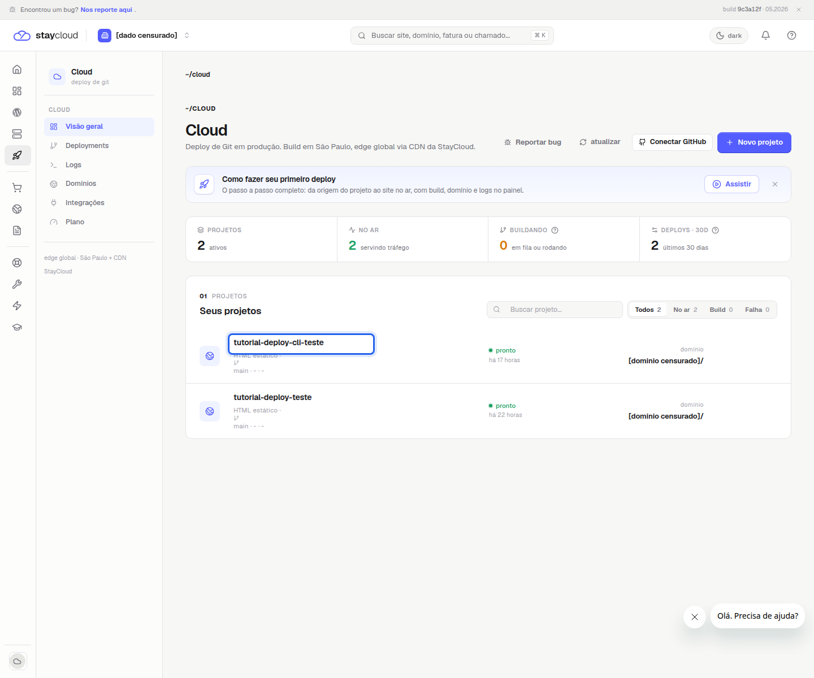
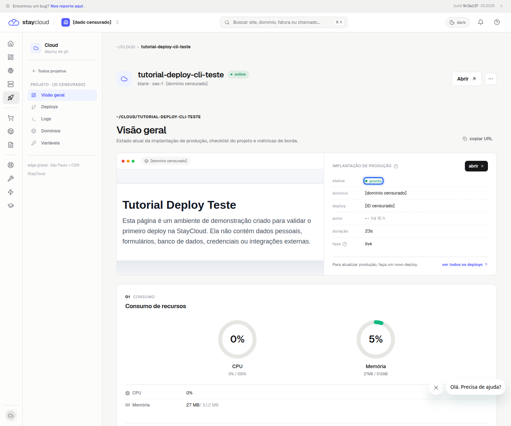
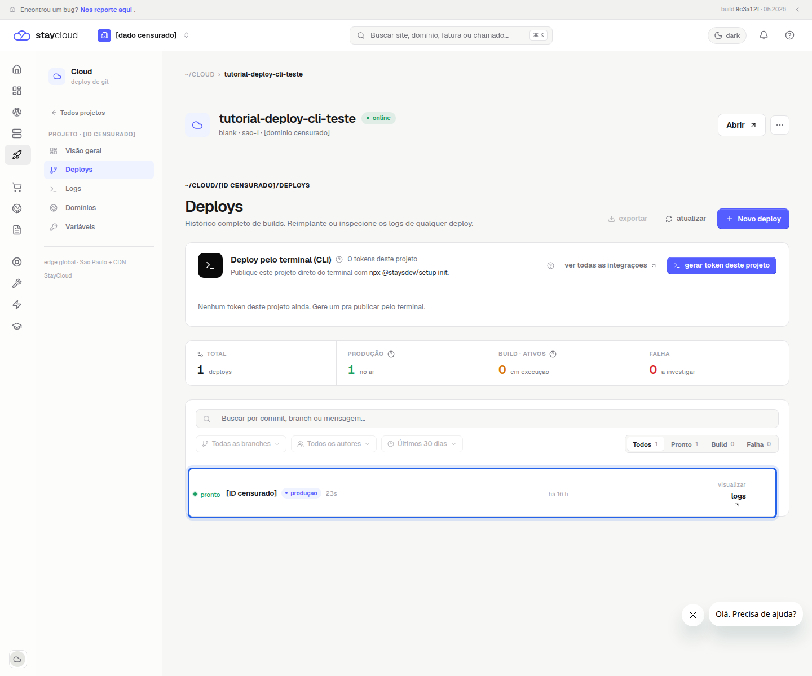
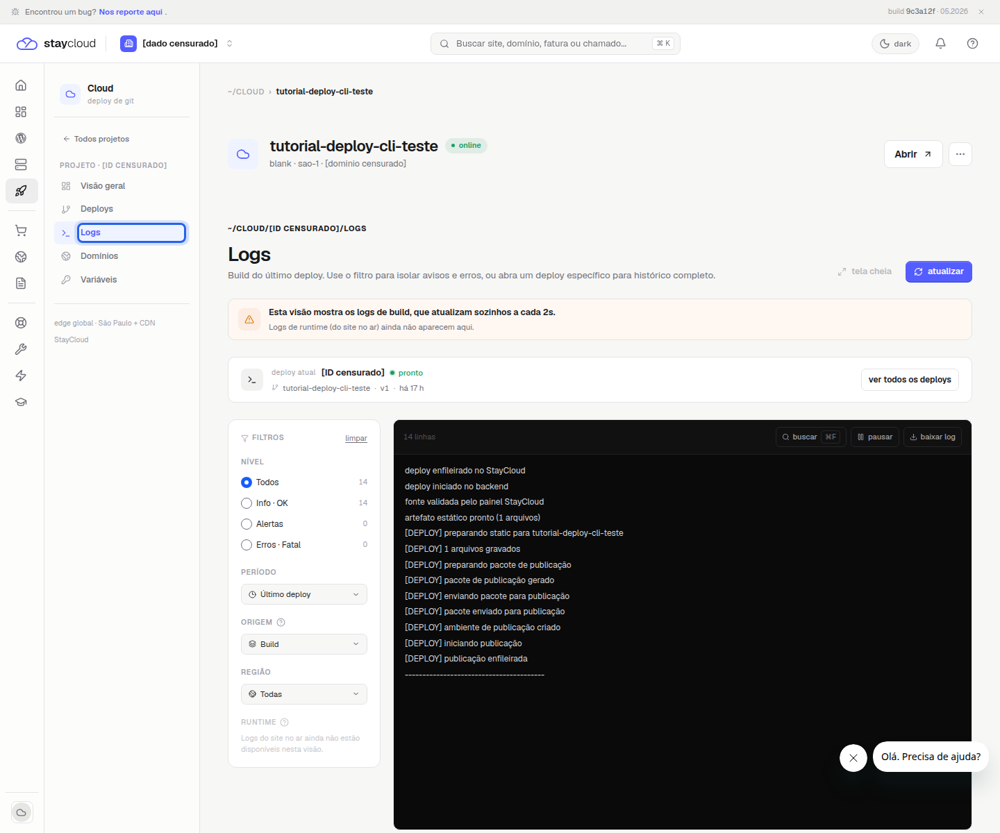
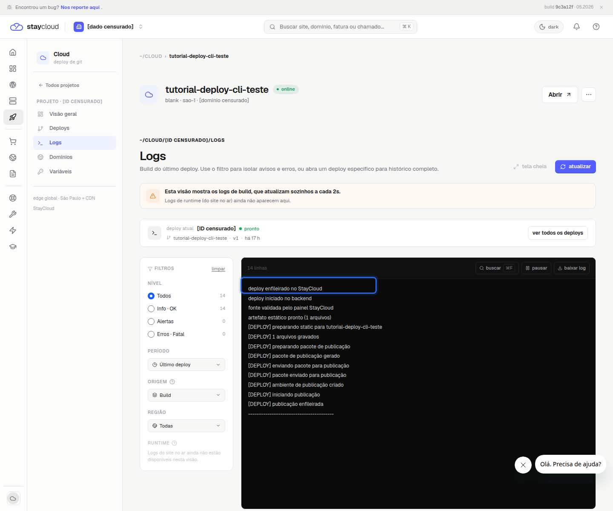
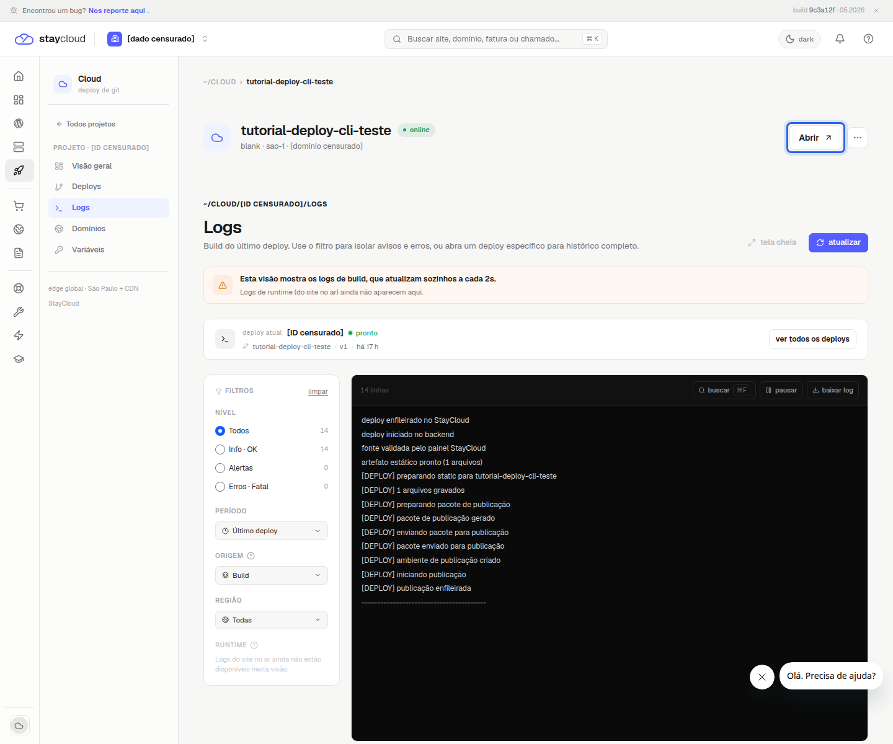

Como consultar os logs do Deploy StayCloud e acompanhar o status
Logs do Deploy StayCloud ajudam a entender o que aconteceu durante uma publicação, confirmar se a aplicação ficou disponível e identificar os primeiros sinais de erro antes de tentar uma nova ação. Neste tutorial, você vai aprender como abrir uma aplicação publicada no Painel Novo, conferir o status do deploy, acessar o histórico de publicações e consultar os logs de build com segurança.
Este passo a passo parte de uma aplicação de teste já publicada. Se você ainda não ativou o recurso, veja como ativar o Deploy no Painel Novo. Se ainda não publicou uma aplicação, consulte como fazer o primeiro deploy na StayCloud. Para terminal, use o tutorial de CLI Deploy StayCloud. Para conhecer a empresa, acesse o site oficial da StayCloud.
O que o status de um deploy informa
O status mostra a situação atual da publicação. No fluxo validado, a aplicação de teste aparece como online, enquanto a área IMPLANTAÇÃO DE PRODUÇÃO exibe o campo status com o valor pronto. A mesma área também mostra domínio, deploy, autor, duração e fase.
Na validação, o deploy estava com fase live e duração de 23s. Esses dados ajudam a confirmar que a publicação foi processada. O painel também apresenta indicadores de histórico, como Total, Produção, Build · Ativos e Falha.
Quando consultar os logs do Deploy StayCloud
Consulte os logs quando quiser verificar o caminho percorrido por uma publicação, confirmar se o build avançou ou entender em qual etapa o processo parou. No painel validado, a aba Logs mostra os logs de build do último deploy e oferece filtros por nível, como Todos, Info · OK, Alertas e Erros · Fatal.
Existe uma limitação importante: a interface informa que essa visão mostra logs de build. Logs de runtime, ou seja, do site já no ar, ainda não aparecem nessa tela. Use esse recurso para acompanhar publicação e build, não como monitoramento completo da aplicação em produção.
Como acompanhar um deploy na StayCloud
1. Abra a aplicação correta
No Painel Novo, acesse Cloud e localize o projeto. Abra somente a aplicação correta, principalmente se houver mais de um projeto na conta. Neste tutorial, foi usado um projeto descartável.

2. Confira o status do deploy
Na página do projeto, confira IMPLANTAÇÃO DE PRODUÇÃO. O campo principal é status. Quando o painel mostra pronto, a publicação validada foi concluída. Observe também duração e fase, pois elas indicam se o processo chegou ao estado final esperado.

3. Abra a execução ou publicação
Para consultar o histórico, clique em ver todos os deploys ou abra a aba Deploys. Essa tela reúne os registros de publicação e permite verificar se há builds em execução, deploys em produção ou falhas a investigar. No projeto usado no tutorial, o registro exibido estava como pronto e em produção.

4. Consulte os logs
Abra a aba Logs. A tela mostra o build do último deploy e informa que os logs atualizam sozinhos a cada 2s. Use os filtros laterais para separar informações, alertas ou erros fatais. Se estiver analisando uma falha, revise apenas as linhas necessárias.

5. Identifique se o deploy foi concluído
Nos logs, procure mensagens de avanço do build, validação da fonte, geração do pacote e envio para publicação. No exemplo validado, uma linha segura mostra deploy enfileirado no StayCloud. Outras mensagens indicavam preparação do pacote e início da publicação.

Como reconhecer um deploy bem-sucedido
Um deploy bem-sucedido combina alguns sinais: o projeto aparece como online, o status de produção aparece como pronto, a fase está como live e a aplicação pode ser aberta pelo botão Abrir. Esses sinais devem ser avaliados juntos, porque o histórico e os logs ajudam a confirmar que o painel terminou o processo esperado.

Como reconhecer uma falha
No fluxo validado, não foi criada uma falha artificial. Ainda assim, o painel mostrou áreas preparadas para esse acompanhamento: o resumo de Falha no histórico e os filtros Alertas e Erros · Fatal nos logs. Quando esses contadores tiverem valores, abra os logs e leia as mensagens próximas ao ponto em que o build parou.
O que conferir antes de tentar novamente
Antes de executar outro deploy, confira se você está no projeto correto, se o status já terminou, se há registro em Build · Ativos e se os logs exibem alerta ou erro. Se o painel mostra uma publicação bem-sucedida, não é necessário repetir o deploy só para confirmar.
Erros comuns ao acompanhar um deploy
- Abrir o projeto errado e interpretar o status de outra aplicação.
- Confundir logs de build com logs de runtime do site no ar.
- Copiar logs completos sem revisar dados sensíveis.
- Ignorar os filtros de Alertas e Erros · Fatal.
- Refazer o deploy antes de confirmar se existe build em execução.
Dúvidas frequentes
Os logs do Deploy StayCloud mostram tudo que acontece no site?
Não. Na tela validada, os logs são de build. A interface informa que logs de runtime do site no ar ainda não aparecem nessa visão.
Preciso usar terminal para consultar os logs?
Não para esse fluxo. A consulta mostrada neste tutorial foi feita pelo painel, usando as abas Deploys e Logs.
Posso baixar os logs?
A tela validada exibiu o botão baixar log. Antes de compartilhar qualquer arquivo baixado, revise e remova dados sensíveis.
Conclusão
Consultar os logs do Deploy StayCloud ajuda a confirmar o andamento da publicação e o resultado do build. Para uma verificação segura, abra a aplicação correta, confira o status, revise Deploys, use Logs e só compartilhe mensagens depois de revisar dados sensíveis.